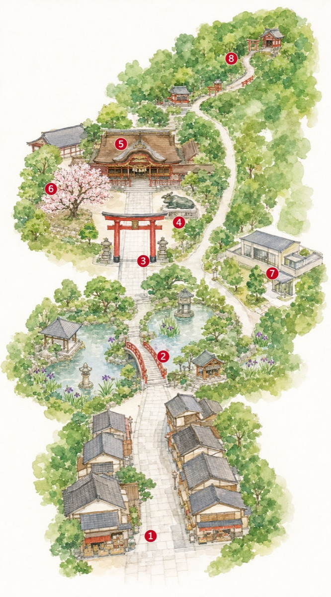

大區導覽
AREA GUIDE
每個大區用一張日式插畫地圖看懂地理與動線,再配編號景點與遊記式介紹。太宰府為新版範本,其餘區陸續升級。
學問之神的千年門前町 — 一條參道走到底,梅枝餅、星巴克、合格祈願全在路上。

插畫地圖 · AI 生成(gpt-image)· 僅供本行程導覽
- 1
表参道商店街 Maps梅枝餅・隈研吾星巴克・合格ラーメン一蘭,全在這條石板街上
- 2
太鼓橋・心字池 Maps過去/現在/未來三座紅橋,池畔菖蒲
- 3
- 4
- 5
御本殿 Maps令和大改修中、2026/9 恢復;過渡動線照常參拜
- 6
- 7
九州國立博物館 Maps彩虹隧道電扶梯直達、全冷氣、雨天避暑備案
- 8
天開稲荷神社 Maps境內後山小社;鬼滅聖地竈門神社需另搭巴士約 10 分
一出西鐵太宰府站,表参道就在眼前 — 不長的一條石板街,兩側是現烤梅枝餅的甜香、隈研吾用兩千根杉木蓋的星巴克、和全世界唯一的合格祈願拉麵。順著人流往上,過了心字池上的紅色太鼓橋、穿過鳥居,就是學問之神坐鎮的天満宮。御本殿正逢 124 年一次的『令和大改修』、要 2026 年 9 月才恢復,但飛梅、御神牛、庭園都照常。想再走遠一點,後山的天開稲荷神社、右側冷氣全開的九州國立博物館,都是盛夏避暑的好去處。
特別值得一提
隈研吾星巴克兩千根杉木『地獄組』無釘工法,太宰府必拍建築,抹茶星冰樂消暑。
合格ラーメン(一蘭)世界唯一、五角合格碗/合格箸/59cm 麵。因 13:00 菊川鰻魚是正餐,建議看拍＋買合格周邊、想吃點一份分。
竈門神社(延伸)《鬼滅之刃》聖地、緣結び名社,巴士 10 分上山。夏天悶熱、體力好再去。
家庭提醒
參道平緩好走,但樓門有階梯、太鼓橋較陡,扶好慢走。盛夏正午最熱、12 點前收工回市區吹冷氣,竈門神社山路留給體力好的人。公廁在神社右側與參道中段。下午長輩想省力就直接回博多,採買午餐都在市區、不會錯過重點。
福岡人的海岸後花園——一條濱海公路串起網美椰子鞦韆、海中夫婦岩鳥居、白色希臘風咖啡與現撈海鮮;沒有鐵路直達,是自駕才玩得開的兜風路線。
怎麼到 · 停多久
Day3 全天自駕。Nippon 租車博多口取車(訂單 N64330、09:00 取／19:00 還、崴唯一駕駛)、MapCode 13 320 278*04。市區到糸島海岸約 40-50 分。點與點之間開車,盛夏車內高溫勿留長輩久候。
周邊順路亮點
- 芥屋大門——日本三大玄武岩洞之一、可搭遊覧船(約 25 分)進洞、糸島半島最西端。想看奇岩海蝕洞再排。 Maps
- 伊都菜彩——JA 直賣所、全九州最大農產直賣、糸島豚／糸島雞蛋／當地蔬果海產超便宜,買伴手禮或回程補貨很好逛。 Maps
- パームビーチ ザ・ガーデンズ——海邊餐廳＋商店群、夕陽名所、二見ヶ浦旁。 Maps
- 牡蠣小屋(岐志漁港等)——11-3 月冬季限定、炭火烤牡蠣。我們 7 月去沒有營業、列出來讓你知道季節。 Maps
怎麼逛
- 自駕環半島、我們的順路:椰子鞦韆 10:20 → 夫婦岩 11:00 → 櫻井神社 11:50 → 海鮮堂 12:30 午餐
- 午餐後看狀況:白糸の滝為選配——路順＋超前才上山(夏天往白糸塞車風險高),否則加油満タン返し直接還車
- 熱門的椰子鞦韆／夫婦岩一帶假日與夏天午後會塞、停車位難搶,早上先攻最順
- 避雷:海邊各點多為戶外曝曬,車上先開好冷氣再下車;長輩不下車的點(如櫻井神社)別把人留在高溫車內
怎麼吃
- 海鮮堂(已訂 12:30)——現撈海鮮定食、坐桌椅、不吃內臟也沒問題 Maps
- サンセット／current／ロンドンバスカフェ——糸島海岸知名咖啡群、看海放空、ロンドンバス是倫敦紅巴士改裝的打卡點 Maps
- 伊都菜彩 現買——糸島豚、雞蛋布丁、當季水果,直賣所價格實在 Maps
怎麼玩
- ヤシの木ブランコ 椰子鞦韆——面海盪鞦韆的招牌網美照、要走一小段沙灘 Maps
- 二見ヶ浦 夫婦岩・白鳥居——海中兩塊夫婦岩與白色鳥居、日落名所 Maps
- 櫻井神社——嵐粉聖地、莊嚴古社(車上高溫勿久留長輩) Maps
- 白糸の滝 納涼(選配)——落差 24m、夏天消暑、可玩流水素麵(路順再去) Maps
家庭提醒
全程自駕、坐車不走遠,對膝蓋最友善的一天。但海邊點多為戶外、日曬強,備陽傘、帽子、防曬,每個點停留別太久。椰子鞦韆要走沙灘、鞋子好走一點。海鮮堂坐桌椅、餐點清爽適合長輩。夏天沒有牡蠣小屋、別白跑。
回行程頁